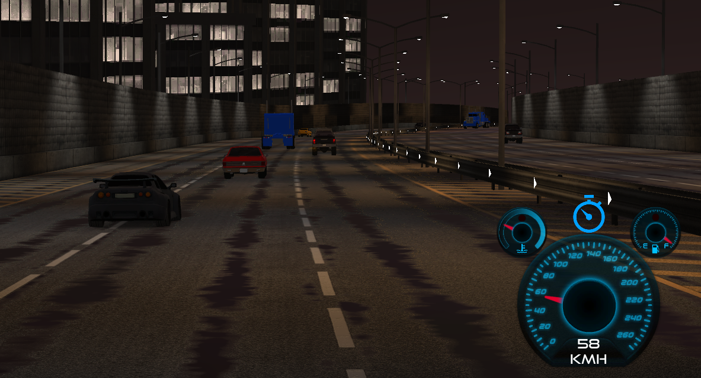
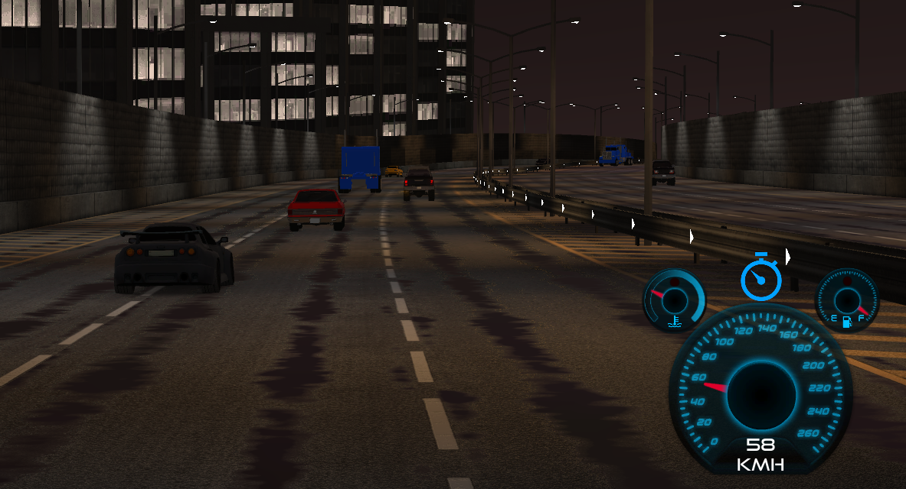

About Me
I'm a second-year game dev student on a quest to turn wild ideas into playable worlds. Whether it's dodging cars or blasting zombies, I love crafting games that are fast, fun, and full of flavor. Check out two of my latest creations below!
Projects
LaneSplitter
A high-speed, adrenaline-packed urban racing game where precision is everything. In this group project, I helped create a fast-paced experience where players weave between dense highway traffic, drift around corners, and race against an aggressive AI rival.
🌆 Set in a realistic city highway environment with dynamic traffic, the game blends arcade-style fun with semi-realistic physics using the RCC system in Unity.
🏎️ Features include:
- Realistic car models with distinct stats (speed, handling, etc.)
- Head-to-head racing against an AI opponent
- Intense lane-splitting and drifting mechanics
- Scoreboard to track best times and encourage replayability
- Dynamic camera views and immersive HUD
- Urban visuals, ambient traffic sounds, and custom engine FX
This was a collaborative project focused on gameplay mechanics, AI racing behavior, and immersive presentation. Think Need for Speed meets Traffic Simulator—with just enough chaos to keep you hooked.
 

Rise of the Dead
Rise of the Dead is a chaotic top-down 2D survival shooter inspired by classics like Crimsonland. Armed with a variety of weapons and your reflexes, you must fight off waves of enemies and survive as long as you can in a zombie-infested arena.
🔫 Features include:
- Mouse-based movement and directional shooting
- AI enemies with roaming, chasing, and size-based behaviors
- Three weapon types: Pistol, SMG, and Laser Gun
- Collectible power-ups like health and shield boosts
- Score tracker and local leaderboard system
- Sound effects for weapons, enemies, boosts, and damage
- Single-level arena with endless survival gameplay
It’s fast, fun, and loaded with satisfying feedback and challenge. Designed in Unity with custom sounds and effects to keep the action intense and immersive.